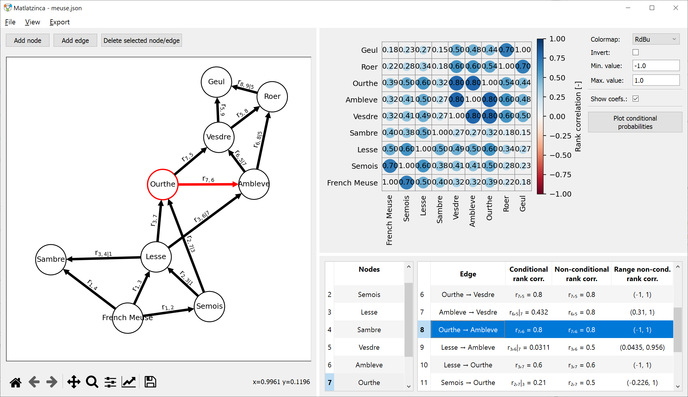

Matlatzinca is a program to schematize and quantify a dependence between different random variables using a Non-parametric Bayesian Network. The user specifies nodes and edges, that represent the random variables and their (conditional) dependence. This structure is the Bayesian Network, which is Non-parametric as the probability distributions for the random variables themselves are not specified (and do not need to be). The program outputs the correlation matrix that can be used in subsequent analyses.
The program was designed for expert elicitation, meaning that experts were presented with a situation for which they need to assess the dependence between given random variables. In such applications, Matlatzinca helps the user by providing a graphical interface, and doing the (difficult) conditional correlation calculations.
Launching Matlatzinca
There are two options for launching Matlatzinca
Start Matlatzinca by double-clicking the executable Matlatzinca.exe.
Alternatively, the module can be launched directly from the Python code. To do so, go to the site-package directory of Matlatzinca, called “Matlatzinca” (with capital M). It should contain a directory called “matlatzinca” (with lower-case m). Open a command prompt with Python environment variables (e.g., an Anaconda command prompt) and execute the following command: “python -m matlatzinca”.
New project, loading and saving
There are several options for opening of saving a project:
New project: When starting Matlatzinca, a new project is opened. By choosing the New option in the File menu, the current project is closed and an empty project is presented.
Load project: In the File menu an existing project can be loaded with the Open option. Previously created and saved project (see below) can be loaded with this option.
Save project as: Clicking Saveas opens a dialog in which you can specify the location and file name for saving the project. The current project is then saved in JSON-format5 (.json).
Save project: When a project is already opened, in can be saved without giving a filename, by clicking the Save option in the menu.
Edit a project
The figure below shows the Matlatzinca main screen. The screen consists of three main panels.

A number of actions can be done to configure a project:
The drawing panel: The drawing panel, on the left is where you will create the Directed Acyclic Graph (DAG) representing the dependence structure of the BN. You can do this by using the Addnode, Addedge and Deleteselectednode/edge buttons. This DAG shows how the different variables are related to each other.
The input panel: The input panel, on the lower right, is used to name the random variables “Nodes” and quantify the dependence for the edges that you have drawn. You have the option to quantify the edges using two different methods: Spearman’s conditional rank correlations or non-conditional rank correlations. To help you, the software provides a range of possible values for non-conditional rank correlations. This range is based on the structure of the DAG and the magnitude of the correlations that you entered. The range will be updated as you enter values for either conditional or non-conditional rank correlations.
The correlation matrix panel: The correlation matrix panel, on the upper right, is where you can see the correlation between all the variables in the model. The magnitude and direction of the correlation is shown by circles that vary in size and color. The colormap can be chosen by the user. The panel also allows you to plot the conditional probabilities between two variables (button: Plotconditionalprobabilities), which shows how likely it is that one variable is above a certain value given that the other variable is above a certain value. This helps you understand how the variables are related and make it easier to quantify your model.
Exporting results
Results can be exported with the Export button in the menu. It allows you to export the table with nodes, table with edges, and the correlation matrix, ToCSV``or``Toclipboard. Exporting to clipboard can be used to paste the result in, for example, Excel.